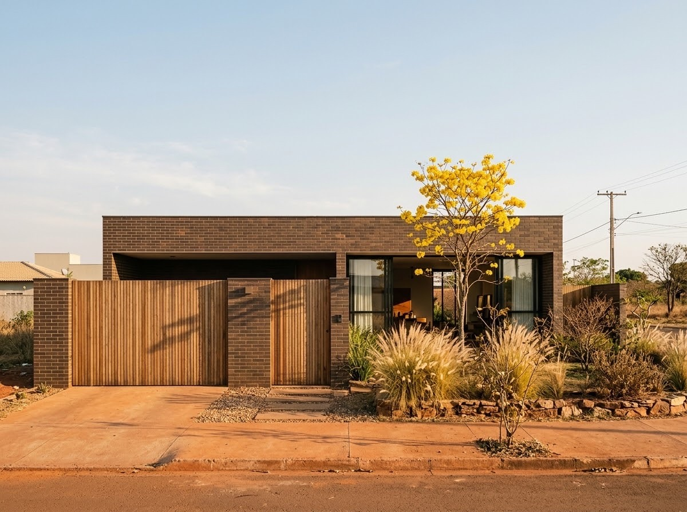
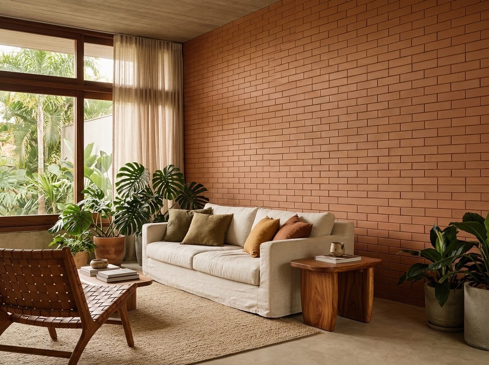
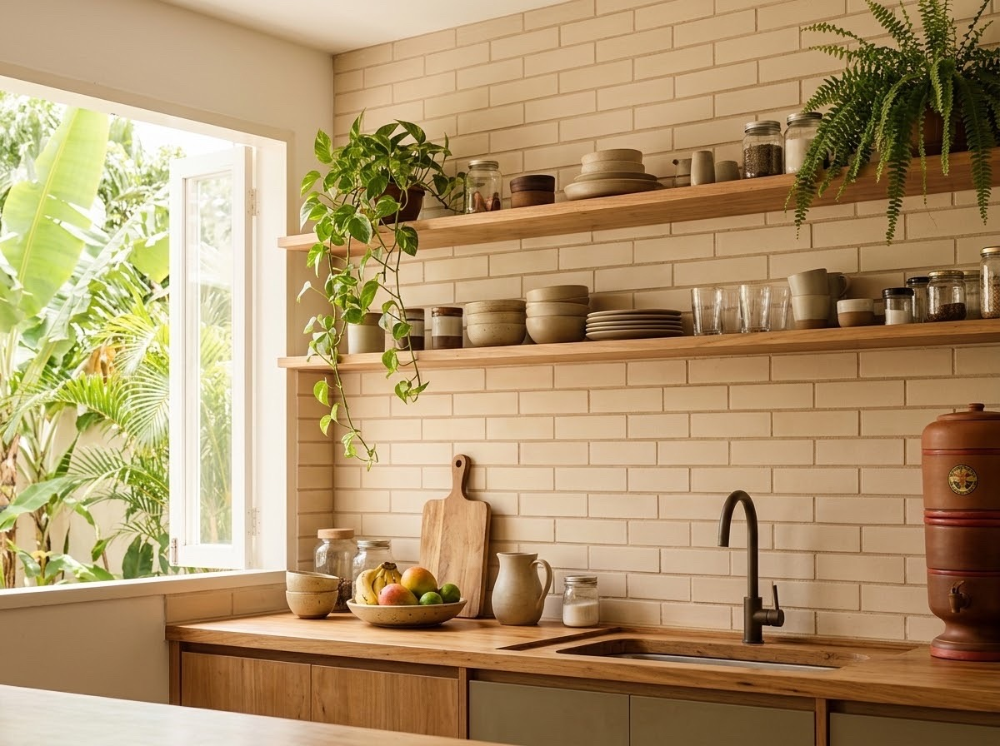
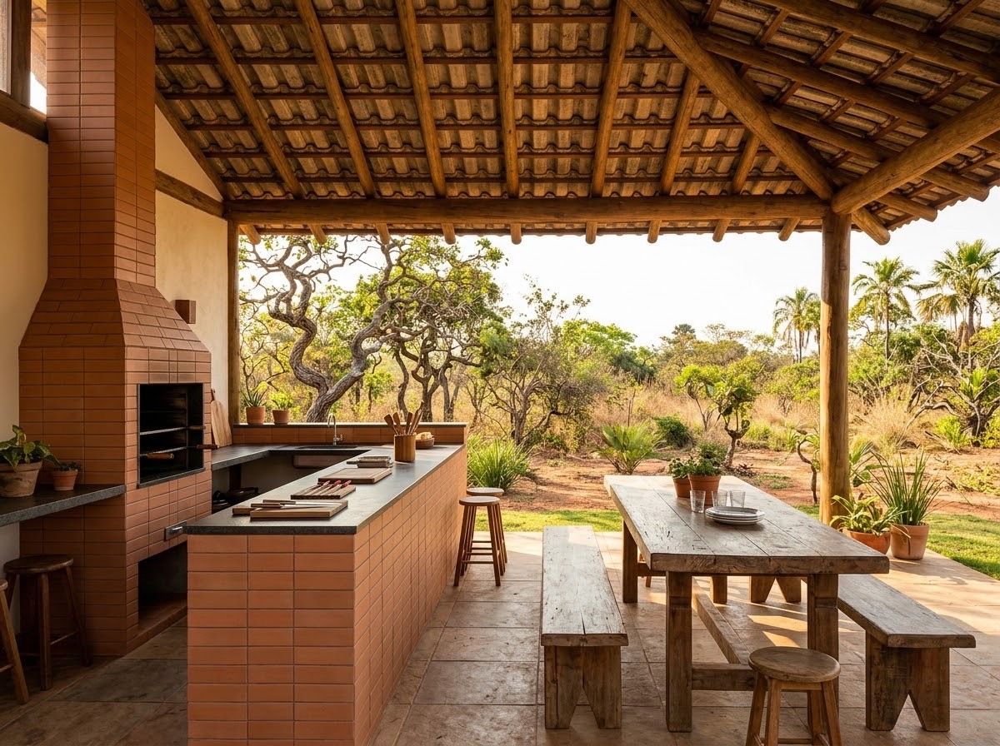
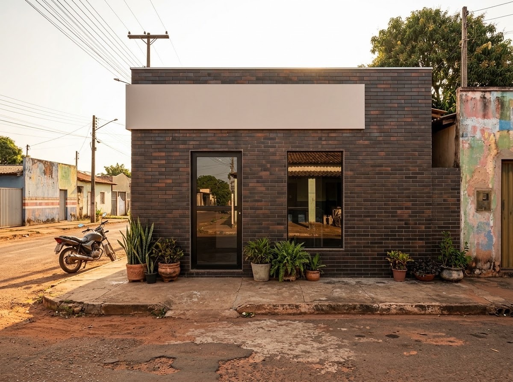
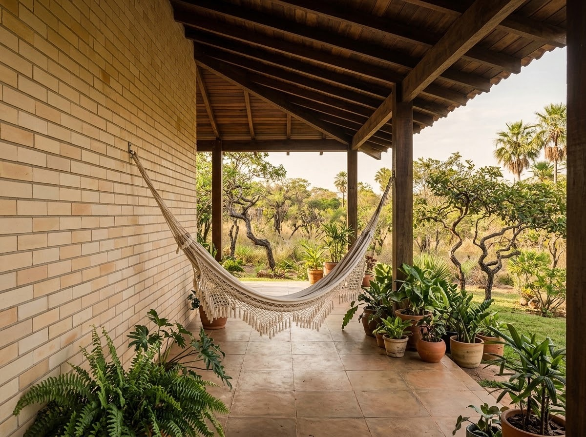

TOM_CLARO_NOME
7 × 24 cm · lisa · natural
Plaqueta de barroFig. 01
[01] Três tons · 7 × 24 cm
Plaqueta lisa de barro, 7 × 24 cm, em três tons de queima. Barro e forno nossos, em Tocantinópolis.
De Tocantinópolis a PalmasFig. 02
Fábrica e logística02
Frete próprio02.1
A plaqueta sai do nosso forno em Tocantinópolis e viaja no nosso caminhão, sem intermediário e sem transportadora. Por isso chega com preço competitivo em TO, MA, PA, PI e GO.
Para lojas02.2
Compra direto da fábrica, sem intermediário: a margem de revenda fica com você.
Quero revenderPara arquitetos02.3
Pedido ao canteiro em 3 a 7 dias, com ficha técnica e apoio no detalhamento.
Prazo02.4
3 a 7dias até a obraEstados02.5
5TO, MA, PA, PI e GO, com frete próprioCaminhão próprio02.6
1caminhão, do forno ao canteiroPlaqueta02.7
7 × 24cm, lisa, em três tons de queimaÉ barro de verdade, extrudado e queimado em Tocantinópolis, no mesmo forno que faz o tijolo da fábrica há anos. Não é porcelanato imitando tijolo: a superfície muda com a luz do dia, e cada peça carrega a variação natural da queima.
Uma única plaqueta, 7 × 24 cm, lisa e natural, em três tons de barro queimado.
7 × 24 cm · lisa · natural
7 × 24 cm · lisa · natural
7 × 24 cm · lisa · natural
Tom, lote ou corte feito para o projeto, sob consulta.
Fachada, sala, cozinha, área gourmet, comércio e varanda.






Ficha técnica da plaqueta e apoio no detalhamento do projeto, do tom à paginação da parede.
Conversar sobre meu projetoPreço de fábrica, entrega em 3 a 7 dias com caminhão próprio e atendimento direto com quem produz.
Quero revender